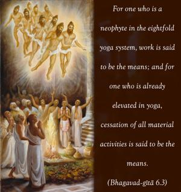
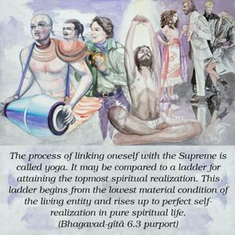
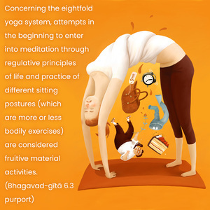
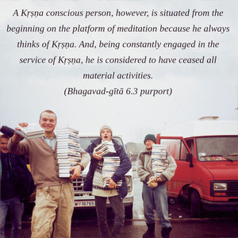

For one who is a neophyte in the eightfold yoga system, work is said to be the means; and for one who is already elevated in yoga, cessation of all material activities is said to be the means.




The process of linking oneself with the Supreme is called yoga. It may be compared to a ladder for attaining the topmost spiritual realization. This ladder begins from the lowest material condition of the living entity and rises up to perfect self-realization in pure spiritual life. According to various elevations, different parts of the ladder are known by different names. But all in all, the complete ladder is called yoga and may be divided into three parts, namely jñāna-yoga, dhyāna-yoga and bhakti-yoga. The beginning of the ladder is called the yogārurukṣu stage, and the highest rung is called yogārūḍha.
Concerning the eightfold yoga system, attempts in the beginning to enter into meditation through regulative principles of life and practice of different sitting postures (which are more or less bodily exercises) are considered fruitive material activities. All such activities lead to achieving perfect mental equilibrium to control the senses. When one is accomplished in the practice of meditation, he ceases all disturbing mental activities.
A Kṛṣṇa conscious person, however, is situated from the beginning on the platform of meditation because he always thinks of Kṛṣṇa. And, being constantly engaged in the service of Kṛṣṇa, he is considered to have ceased all material activities.